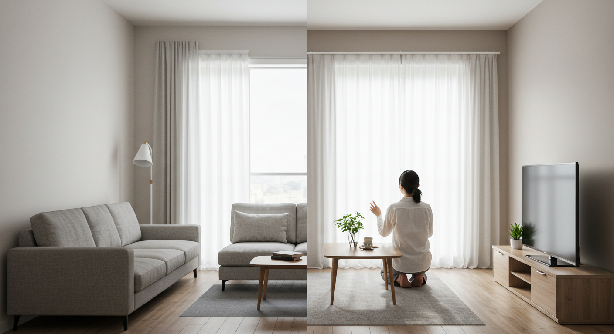

-
後悔しないキッチンリフォーム！費用相場と成功のポイントを徹底解説

キッチンリフォームを検討中のあなたへ。後悔しない理想のキッチンを実現するための費用相場、成功のポイント、キッチンの選び方、リフォーム会社の選び方まで徹底解説します。
-
大阪で理想のキッチンリフォーム！失敗しない業者選びと費用ガイド
大阪でキッチンリフォームを成功させるための完全ガイド。信頼できる業者の選び方から費用相場、補助金情報まで詳しく解説します。
-
リフォーム三光サービスで洋服お直し！忙しいあなたも安心の理由
お気に入りの洋服を蘇らせる「リフォーム三光サービス」。忙しいあなたでも安心して利用できる理由を、豊富なサービス内容や熟練の技術、便利な利用方法から徹底解説します。
-
畳リフォームで快適な和室へ！安全・掃除楽々を実現する選び方

畳リフォームの種類や費用、業者の選び方を徹底解説。安全で掃除がしやすく、快適な和室を実現するためのポイントを紹介します。
-
【リフォームトイレ】快適で家計に優しい！失敗しない選び方と費用ガイド

トイレリフォームで失敗しないための完全ガイド。最新トイレの機能、メリット・デメリット、費用相場、信頼できる業者の選び方まで詳しく解説します。
-
【40代向け】後悔しないリフォーム会社の選び方と費用相場
40代からのリフォームを成功させるための会社選びのポイント、費用相場、注意点を徹底解説。信頼できるパートナーを見つけて、理想の住まいを実現しましょう。
-
子育てママのリフォーム成功術！快適で安全な家づくり

子育て世代の悩みを解決し、家族みんながもっと笑顔で快適に暮らすためのリフォーム成功術を、実例や費用、業者の選び方まで詳しく解説します。
-
リフォームの値段はいくら？費用相場と後悔しないための全知識

リフォームの費用相場や後悔しないための知識を網羅的に解説。キッチン、お風呂、トイレなど場所別の値段から、費用を抑えるコツまで紹介します。
-
マンションリフォームとリノベーション！理想を叶える選択ガイド

マンションリフォームとリノベーションの違いを徹底解説。それぞれのメリット・デメリット、費用相場、失敗しない計画の立て方まで、理想の住まいを実現するための完全ガイド。
-
中古マンション購入者必見！リフォームとリノベーションの違いと賢い選択術

中古マンション購入者向けに、リフォームとリノベーションの違い、費用、メリット・デメリットを徹底解説。後悔しないための賢い選択術を学びましょう。
-
リフォームとは？リノベーションとの違いや費用相場を徹底解説
リフォームの基本的な定義から、リノベーションとの明確な違い、気になる場所別の費用相場、そして後悔しないための業者の選び方まで、知っておきたい情報を網羅的に解説します。
-
良いコーヒーを自宅で楽しむ！失敗しない豆選びから美味しい淹れ方まで
自宅で美味しいコーヒーを淹れるための完全ガイド。失敗しないコーヒー豆の選び方から、ハンドドリップのコツ、おすすめの器具まで詳しく解説します。
-
リフォーム業者選びで失敗しない！後悔しないための全知識

リフォームで後悔しないための業者選びの全知識を解説。基礎知識から信頼できる業者の見極め方、悪徳業者から身を守る注意点まで網羅します。
-
マンションリフォームで理想の住まいを！費用相場から注意点まで徹底解説
マンションリフォームの費用相場、できること、メリット・デメリット、業者選びのコツまで、理想の住まいを実現するための情報を徹底解説します。
-
リフォーム工事の全体像を把握！費用・種類・業者選びのポイントを徹底解説

リフォームを成功させるための全体像を徹底解説。目的の明確化から費用相場、種類、失敗しない業者選びのポイントまで、初心者にも分かりやすくガイドします。
-
リフォーム框で玄関DIY！選び方から取り付け手順まで徹底解説

リフォーム框を使った玄関DIYの完全ガイド。初心者でも安心の選び方、具体的な取り付け手順、メリット・デメリットまで、成功に必要な情報を徹底解説します。
-
【50代女性向け】リフォーム見積もりで失敗しない！賢い依頼と確認のコツ
50代女性がリフォーム見積もりで失敗しないための賢い依頼方法と確認のコツを徹底解説。基本からチェックポイントまで、安心して理想のリフォームを実現するための知識をご紹介します。
-
リフォームの見積もりアプリで費用を把握！失敗しない選び方と活用術
リフォームを考え始めた方の「費用はいくら？」という不安を解消する「リフォーム見積もりアプリ」。そのメリット・デメリットから、失敗しない選び方、計画を成功に導く活用術までを徹底解説します。
-
リフォーム見積もりの値引き交渉術！失敗しないコツと費用を抑える方法
リフォームの見積もりで損しないための値引き交渉術を徹底解説。失敗しないコツや費用を抑える具体的な方法、交渉の相場からメリット・デメリットまで網羅します。
-
「本当の自分」と出会う旅へ：心を整え、軽やかに生きるためのヒント

日々の疲れを感じているあなたへ。自分を知り、心の余白を作り、人間関係を整えることで、軽やかに生きるための具体的なヒントをご紹介します。
-
リフォーム産業フェア活用術！経営課題解決と成長戦略のヒント

リフォーム産業フェアを戦略的に活用し、経営課題解決と未来の成長戦略に繋げるための具体的な方法を解説します。最新トレンド、DX化、新規事業のヒントが満載です。
-
リフォームアウトレットで賢く費用を抑える！失敗しない選び方と注意点

高品質な住宅設備や建材を驚くほど手頃な価格で手に入れる「リフォームアウトレット」の活用法を徹底解説。失敗しない選び方からメリット・デメリット、注意点まで、賢いリフォーム計画の全てがわかります。
-
リフォーム営業で成果を出す！新築経験を活かす提案術と成功の秘訣

新築営業の経験を活かしてリフォーム営業で成功するための提案術、新築営業との違い、成功の秘訣を徹底解説します。
-
タイトル未定の人生（nan）を、自分色に彩るために

繰り返される日常の中で「このままでいいのかな？」と感じていませんか？この記事は、タイトル未定の人生を自分らしく彩るための自己理解、心地よい習慣、人間関係のヒントを提案します。
-
2024年最新！リフォーム補助金を活用し費用を抑える賢い選び方と申請ガイド
2024年の最新情報に基づき、リフォーム補助金の賢い選び方と申請方法を徹底解説。費用を抑えて理想の住まいを実現するための完全ガイドです。
-
【2025年最新】リフォーム補助金を徹底解説！費用を抑えて賢く理想の住まいへ

2025年に活用が期待されるリフォーム補助金について詳しく解説。国や自治体の制度、対象工事、申請の流れ、注意点まで、費用を抑えて理想の住まいを実現するための情報を網羅します。